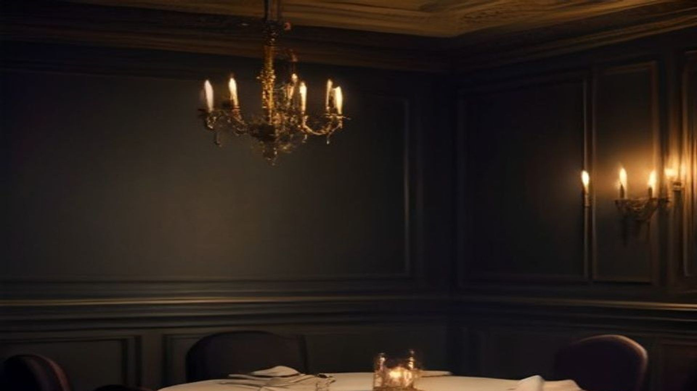
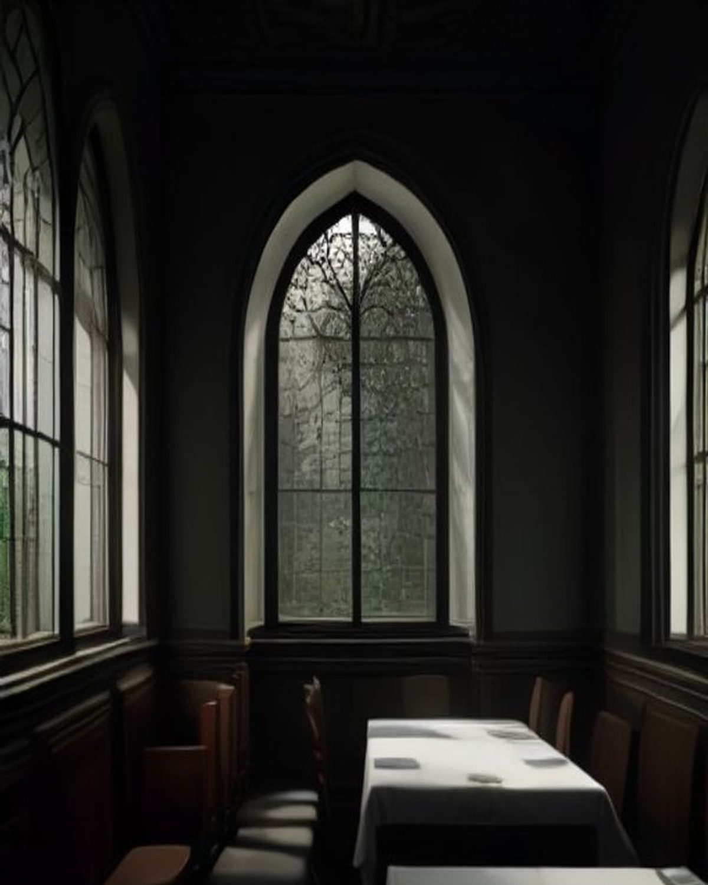
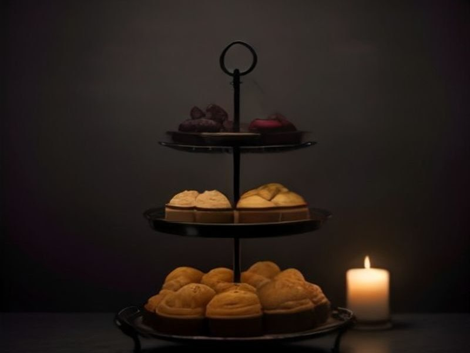

Head chef and co-owner
Inês Carvalho
Opened the room in 2014 after eight years in Basque country kitchens.

Our story
We opened in 2014 with eleven tables and a borrowed charcoal grill. Eleven years later there are still eleven tables.

In the kitchen
The idea has not moved much since the first service. Buy well, cook over fire, write the menu after the market rather than before it, and keep the room small enough that the person who cooked your plate can walk it to the table.
Almost everything is made here. The bread is baked each morning, the butter is churned in the kitchen, the vermouth and the ferments behind the bar come from the same cellar as the wine. What we cannot make ourselves we buy from about a dozen producers we have worked with since the beginning.
There is no dress code and no tasting-menu theatre. You will not be told the life story of a carrot. You will be fed properly and left alone to enjoy your evening.
Write the menu after the market, not before it.
The room

The people
Eleven of us run the room and the kitchen between them. These three have been here since the beginning.
Head chef and co-owner
Opened the room in 2014 after eight years in Basque country kitchens.
Head sommelier
Buys almost exclusively from growers who farm fewer than ten hectares.
Pastry
Runs the pastry section and the morning bread bake single-handed.
Reservations
The room holds twenty-eight. Friday and Saturday go quickly, and the chef's counter is released on the first of each month.
Walk-ins welcome at the bar, every service.